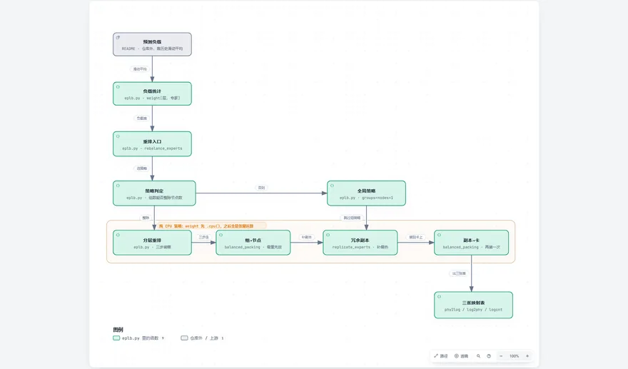
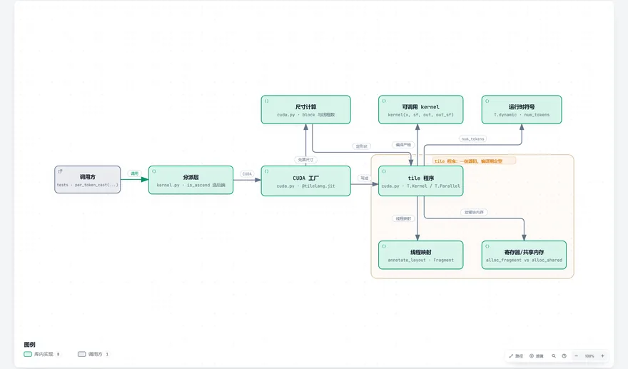
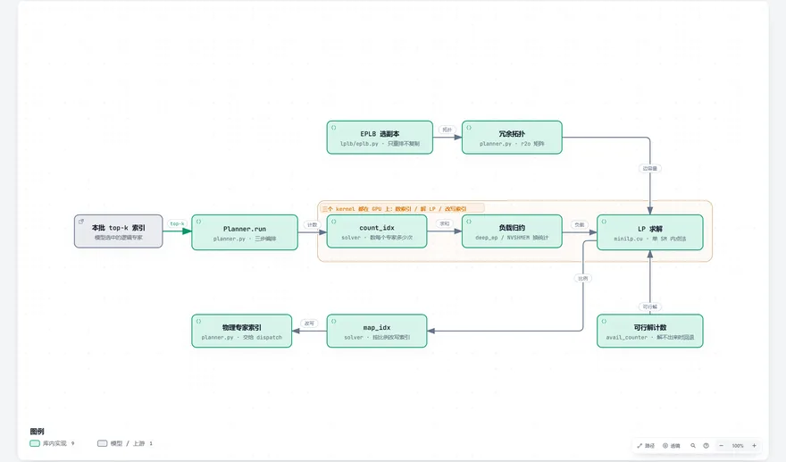

内核与通信 9
Kernels & Communication · 显卡上真正跑的代码，和卡与卡之间搬的数据

FlashMLAdeepseek-ai/FlashMLA
FlashMLA splits one GPU kernel across 384 threads: 128 compute exponentials, 128 dequantize, one issues the MMA.

DeepEPdeepseek-ai/DeepEP
DeepEP moves tokens between GPUs: same node copies memory directly, across nodes it goes over the network.

DeepGEMMdeepseek-ai/DeepGEMM
DeepGEMM compiles a fresh kernel at runtime, because only then does it know the matrix shape and dtype.

EPLBdeepseek-ai/EPLB
EPLB replicates the busy experts and spreads the copies evenly across GPUs.

TileKernelsdeepseek-ai/TileKernels
TileKernels describes work in blocks and lets the compiler turn it into threads and shared memory.

DeepJITdeepseek-ai/DeepJIT
DeepJIT compiles a kernel the first time it is used and caches the binary for next time.

LPLBdeepseek-ai/LPLB
LPLB solves a tiny linear program each batch to move tokens toward idle expert replicas.

DeepGEMM-Ascenddeepseek-ai/DeepGEMM-Ascend
DeepGEMM-Ascend moves the same matrix multiply onto the Ascend memory hierarchy.

DeepEP-Ascenddeepseek-ai/DeepEP-Ascend
DeepEP-Ascend swaps NVLink and RDMA for UBMEM and URMA.